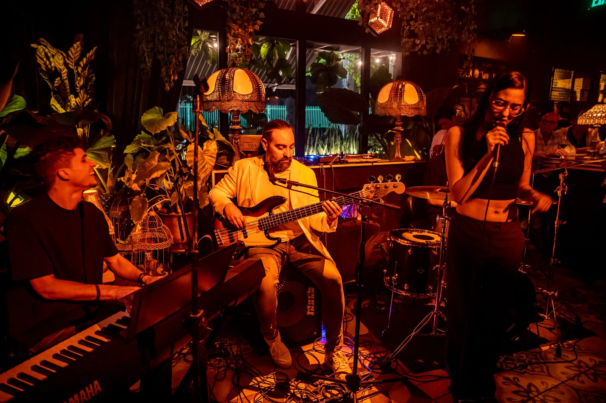

Zonas Húmedas

- Piscina para adultos (amplio espacio para nadar, refrescarse y disfrutar del sol)
- Piscina infantil (área segura y divertida para los más pequeños)
- Jacuzzi (relájate con hidromasajes y disfruta de un momento de bienestar)
- Spa (disfruta de masajes y terapias corporales)
Entretenimiento al Aire Libre
- Parque infantil (diversión para los más pequeños)
- Estanque de patos (espacio tranquilo para conectar con la naturaleza)
- Cine al aire libre (experiencia mágica con noches de películas bajo las estrellas)
- Fogata (disfruta de malvaviscos y charlas alrededor de la fogata)
- Conexión con animales (interactúa con llamas, pavos reales, conejos y más)
- Cancha de voleibol (disfruta de un partido al aire libre en un entorno natural)
- Amplias zonas verdes (relájate y respira aire fresco en espacios abiertos)
- Camas de jardín (descansa y disfruta del paisaje en cómodas camas exteriores)
Sabores y Buen Ambiente

- Restaurante (sabores auténticos con lo mejor de la gastronomía regional)
- Café & Bar (variedad de bebidas, cocteles y ambiente único)
- Música y entretenimiento (disfruta de shows en vivo en el Café Bar)
Experiencias de Ecoturismo
Experiencias de Café
Sumérgete en el mundo del café con recorridos por fincas cafeteras, catación de cafés especiales y aprendizaje sobre el proceso de producción desde la semilla hasta la taza.
Tours de Aventura
Vive emociones fuertes con actividades como rafting, canopy, caminatas ecológicas y exploración de cascadas en los hermosos paisajes del Eje Cafetero.
Tours de Naturaleza
Conecta con la naturaleza a través de avistamiento de aves, caminatas por senderos ecológicos y visitas a reservas naturales en entornos pristinos.